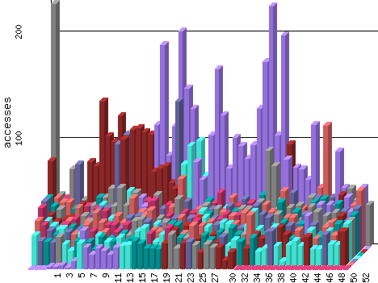

History from 1/26/2003 to 8/28/2010
Historical Totals
Values for completed time periods are final. Values for the reporting period currently in progress are projections, except for user-calculated functions, which are not scaled.

2003
2004
2005
2006
2007
2008
2009
2010
Item
Total Accesses
Total Bytes
Total Visits
Average Accesses
Average Bytes
Average Visits
Latest Accesses
Latest Bytes
Latest Visits
Home Page
18,057
70,979,533
15,561
45
179,241
39
44.63
184,084
44
Produced by
Wusage 7.0